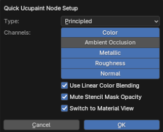

Before doing Ucupaint Setup
Assuming you've already installed the addons. The Ucupaint menu will appear on the Ucupaint tab in the n-panel if you select an object. Before you continue, read this list first:
- Make sure you're on material view
- Make sure your object is already properly unwrapped
- Even though this addon supports more than mesh objects, some features will not available if you choose to use non-mesh objects (like all baking related operations).
Creating Ucupaint Node
Ucupaint is just a node group, you can create a new ucupaint node in the shader editor.
| Creating new Ucupaint node on shader editor |
Creating ucupaint node in the shader editor will create a node that has only one channel, which is 'Color', you can connect the output of this channel to whatever node you want. You can create more channels later, which is explained in channel page.
Quick setup
You can also do a quick setup of the Ucupaint node in 3D viewport, you can click the "Quick Ucupaint Node Setup" button.
| Quick setup button |
A popup menu will be shown and give you some options for setting up the node. There's an option to use different shader types and channels, for now let's just use the default values.
|  |
|---|
| Quick setup options |
The "OK" button will finish the setup process, now Ucupaint is ready to use. You can see the chosen channels and layers list, which is still empty for now.
| Ucupaint is now ready to use! |
If you open the shader editor, what's actually happening is the quick setup is creating a group node that is connected to the default shader (Principled Shader) according to the selected channels you chose before. Please don't edit the inside of this group node manually since it can cause fatal errors.
| What quick setup actually creates |
Expand/Collapse Menu
Please notice that if you see a small triangle beside an icon, it means you can expand or collapse the extra menu, you can see it on the example gif below.
| A triangle beside an icon means you can expand and collapse an extra options menu |